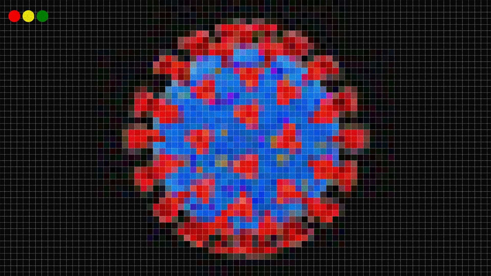

Кто придумал теорию, что сеть 5G – причина происхождения коронавируса
© Иллюстрация: Simon Abranowicz
Время глобальной пандемии – идеальный момент для возникновения сумасшедших теорий заговора, которые поддерживают звезды и противники прививок.
В начале апреля за каких-то четыре дня в Великобритании были разрушены или испорчены как минимум 20 сотовых вышек.Предполагаемая причина такого вандализма?Теория заговора, которая сводит с ума конспирологов в Британии и по всему миру.
Теория установила прямую связь между оборудованием для 5G-сети и вспышкой COVID-19.На некоторых сотрудников телефонных компаний напали только за то, что они прокладывали оптоволоконный кабель.В одном видео, которое просмотрели более двух миллионов пользователей, женщина вступает в разговор с работниками, заявляя, что они «убьют всех», если закончат свою работу.Кстати говоря, многие из башен, которые были разрушены, предназначены для 3G и 4G.

Страхи, связанные с опасностью мобильников и сотовых вышек, существуют уже не первый год, особенно остро стоят вопросы о том, могут ли они вызвать рак (на данный момент не существует никаких убедительных доказательств).А когда начали развивать сеть 5G, то все уже существующие страхи всплыли вновь, а тут еще и пандемия добавила новые возможности для теорий заговора, которые подогревают влиятельные люди.Так как же это могло случиться?
5G – это пятое поколение мобильной сети, которое обещает обеспечить мир более массовой и быстрой связью, чем 4G.5G доступен с 2019 года в Китае, Южной Корее, США, Германии и Британии, но связь работает только частично и не покрывает всю площадь этих стран.Компания по тестированию сетей VIAVI выяснила, что в январе 2020 года новое поколение сети было доступно в 378 городах в 34 странах.
Существуют три главные теории, связанные с 5G, а две из них связаны с COVID-19, но доказательства отсутствуют во всех случаях.Первая теория: сеть 5G вызывает коронавирус, ну или хотя бы его симптомы (многие из тех, кто верит в эту версию, сомневаются вообще в существовании вируса).Получается, что 5G и COVID-19 – это практически одно и то же, это биологическое оружие, которое распространяется через вышки и должно привести к депопуляции, а управляют всем этим лидеры нового мирового порядка.
Подходящий кандидат на роль лидера этой организации тоже уже существует: не кто иной, как Билл Гейтс.Об этом на YouTube объявил один из заговорщиков, связанный с организацией QAnon.У этого пользователя десятки тысяч подписчиков, он считается известным противником прививок, а теперь он видит параллель между работой Гейтса над компанией Microsoft много лет назад и его работой над распространением прививок сейчас.Теория такова: его программа Windows была специально создана таким образом, чтобы она притягивала вирусы, и он мог заработать деньги на антивирусных системах.А уже сейчас он одновременно и ведет кампанию по депопуляции и борьбу с пандемией, все для того, чтобы в будущем заработать на обязательной прививке.Если коротко, то Гейтс хочет заработать на вакцине, которая заодно поможет ему контролировать людей, вместо того, чтобы сейчас остановить смерти, связанные с 5G/COVID-19.
Более популярная теория гласит, что радиация 5G ослабляет иммунитет и люди оказались более подвержены COVID-19.В качестве доказательств этой теории были использованы карты США, на которых якобы видно, что города с этой сетью больше всего пострадали от вируса.Эта теория, конечно же, не учитывает два главных фактора.Во-первых, 5G есть только в больших городах с высокой плотностью населения, где вирус может быстрее распространяться, а во-вторых, у многих стран этой новой сети нет вообще, например в Иране, но несут они самые тяжелые потери от вируса.
Третья теория заговора никак не связана с коронавирусом.Тут люди утверждают, что СМИ специально раздули эти явно неверные теории для того, чтобы отвлечь от реальных опасностей, связанных с 5G, и дискредитировать таким образом противников новой сети.
BuzzFeed написали о том, что видео и теории на эту тему стали появляться в прошлом году, то есть когда в больших городах стали устанавливать новые сотовые вышки.Роликами с такими названиями, как «Человек, который работает над вышками 5G, рассказывает всю правду об опасностях!», делились сотни тысяч раз.Их даты публикаций совпадают с тем моментом, когда британский оператор ЕЕ объявил об установке 5G в шести крупных городах страны.
С января 2020 года, когда коронавирус был признан пандемией, QAnon и пользователи сайта r/conspiracy начали распространять теории, связывающие новое заболевание с 5G.Результаты, помимо разрушения вышек, уже очевидны.Один пользователь Reddit писал о том, что муж, работающий в кабельной компании, все чаще стал получать звонки от людей, которые хотят отказаться от интернета из-за опасности 5G.Пользователь добавил: «Один мужчина сказал мужу, что он часто кашляет, когда пользуется интернетом на компьютере, а когда пользуется телефоном, у него все хорошо».
Но для таких отдельных заговорщиков существует предел в мире интернета.Wired отметили, что эти идеи были замечены и распространены благодаря алгоритмам, которые распознали тренд, но не распознали весь идиотизм происходящего.Похожее случилось примерно месяц назад, когда благодаря алгоритмам разнеслась ложь про Опру Уинфри, также запущенную представителями QAnon.А за прошлую неделю более знаменитые личности стали высказываться на эту тему, притягивая еще больше внимания.
Актер Вуди Харрельсон (два миллиона подписчиков) дважды рассказал в Instagram о том, как 5G усугубляет ситуацию с коронавирусом.Оба поста были уже удалены.Рэпер M.I.A. и актер Джон Кьюсак также решили высказаться на эту тему.
Знаменитый темнокожий пастор Крис Ояхиломе с нешуточным влиянием (его страничка на Facebook собрала два миллиона лайков) рассказывает о теориях заговора, о новом мировом порядке и о связи 5G и COVID-19.Продюсер Тедди Райли тоже решил не оставаться в стороне и обсуждал эту теорию в Instagram Live.
По мнению ученых, коронавирус – как и другие респираторные вирусы в последние годы – передался к людям от зверей.В случае COVID-19, вероятно, это случилось на рынке в Ухане, и вирус передался от летучей мыши.Другие пандемии, такие как испанский грипп 1918 года, который заразил примерно четверть мирового населения, бушевали уже задолго до мобильной связи.
Среагировав на быстрое распространение ложной информации о 5G и COVID-19, YouTube начали удалять видео.Это часть новых правил, касающихся материалов о коронавирусе, которые могут ввести пользователей в заблуждение.По словам The Guardian, другие видео «на грани» порядочности будут удалены со страницы рекомендаций.
Большое количество ученых и врачей высказывались на тему этой теории заговора и решительно отвергали ее.Доктор Симон Кларк, доцент по микробиологии при Университете Рединга, Англия, заявил в интервью BBC, что такие теории – это «полный бред».Он добавил, что теория об опасности 5G для иммунной системы никак не доказана.
В марте в Международной комиссии по защите от неионизирующей радиации (ICNIRP) заявили, что связь 5G безопасна.Глава организации Эрик ван Ронген направил в GQ сообщение, в котором он подтверждает, что связи между новой сетью и коронавирусом не существует.Также он отверг теорию, что 5G – или любая другая сеть G – может негативно повлиять на иммунитет.
Posted On: 2020-04-07T21:00:00
Posted By: Alex Shultz,
Content Date: 2020-04-07
Download Date: 2021-05-30
Document ID: L0C04CMMY